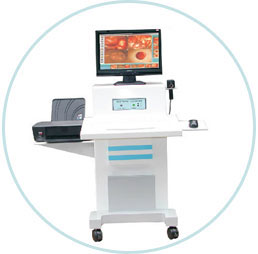

宏康医院韩国电子肛门镜是目前世界上最先进的集电子数码追踪、定位、 冻结于一体的超导光肛门镜。高分辨率镜下成像系统，专业检测、科学分型、对症治疗合三为一，检查全过程由彩色电视显示，图像清晰、逼真。

-
智能检查：
数字彩屏显示，图像可固定、储存、再现可用于治疗前后对比彩色打印结果。
-
技术优势：
医患双方清晰、准确、直观了解病情，避免误诊误治，为临床治疗提供可靠依据。
-
技术突破：
可对病灶部位进行采集、实时诊断，打破传统肛镜检查和肛门指诊容易误诊的弊端